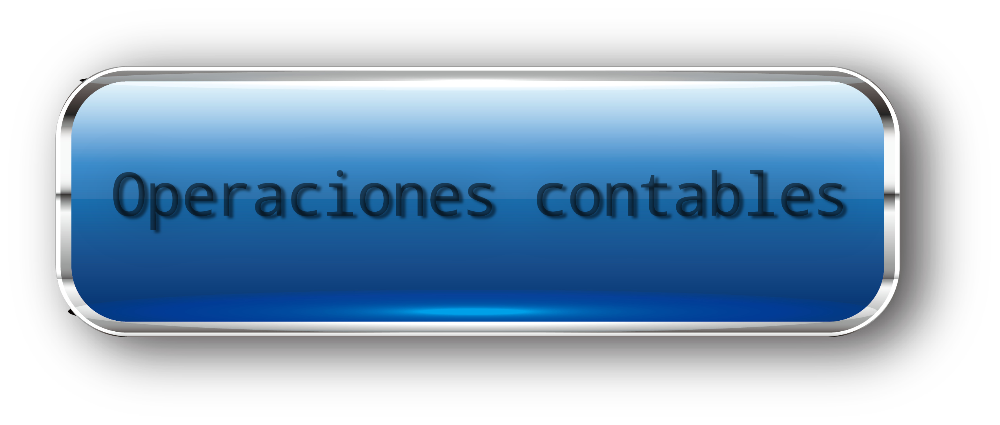
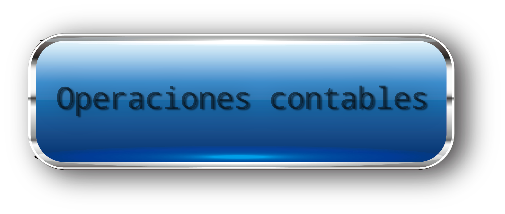

Bases del control:
_Planear y organizar.
_Hacer.
_Evaluar.
_Mejorar.
El equipo de control de gestión supervisará que cada paso que dé la compañía sea en firme, siguiendo la planificación para la inversión y utilizando de forma eficiente los recursos, todo ello con un fin: que la empresa afronte con solidez sus planes y alcance los objetivos.
Para que la estructura de control de gestión funcione es necesario implicar a todas las áreas de la compañía, incluyendo el área que estamos tocando, ventas, en la cual el director de ventas deberá plantear estrategias que sean acordes con los objetivos planteados por la organización, se imponen normas de rendimiento, ya que se necesita establecer un mínimo de ventas (entre otras cosas).
Una vez puesta en practica la estrategia y terminado el ejercicio, se evaluara la gestion del director de ventas el cual es el responsable del cumplimiento de los objetivos de su sector.
La gestion del director de ventas se evaluara analizando el volumen de ventas, el plazo de cobro de dichas ventas y la calidad de las mismas, para luego comparar estos datos con lo planteado en los objetivos.
A su vez, el sector de ventas realizara su control de gestion interno, comandado por el director de ventas, y con la finalidad de evaliar la gestion de todas las entidades de dicho sector.
El principal objetivo del control de gestion es medir la brecha entre lo planeado y lo obtenido, de no haberse cumplido los objetivos, hayar a los principales responsables tomar alguna accion correctiva para intentar evitar que la situacion se repita en el siguiente ejercicio.
|

 
